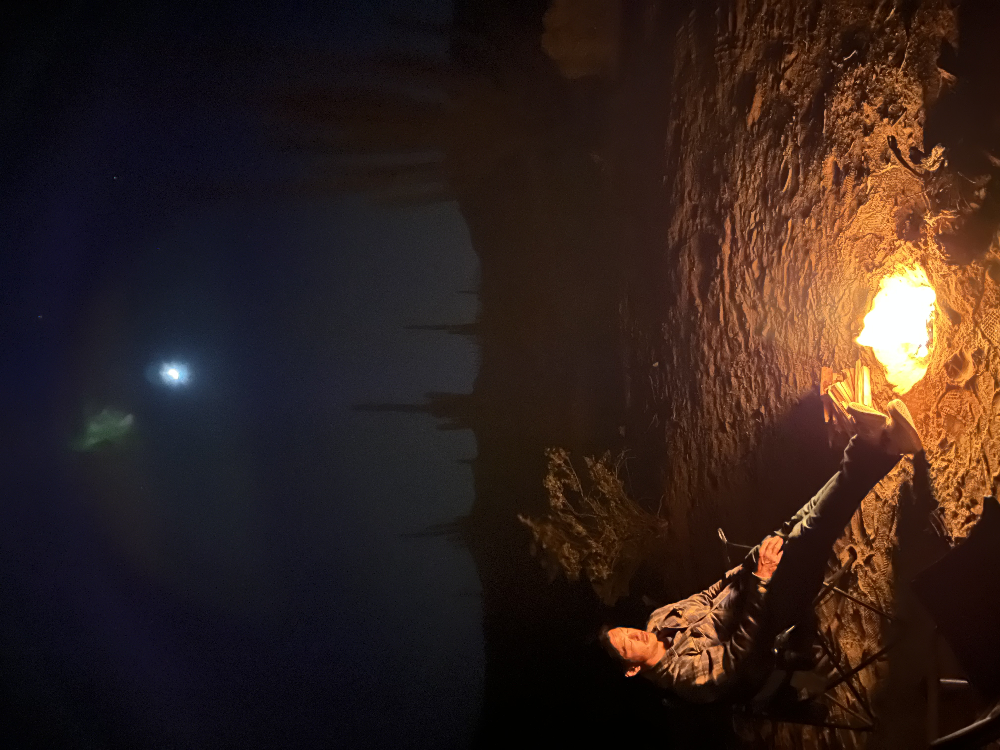

My Resume

Summary
An Operations and Customer Success professional with extensive experience in client facing roles and a passion for collaborating with others. Consistently described as organized, hardworking, and having a positive mindset.
Education
Bachelor of Science, Business Marketing
Cal State University Dominguez Hills
Minor in Management | Honors: Cum Laude | August 2006
Work Experience
Actor
Aqua Talent Agency / Los Angeles, CA / 2019 – Present
JMTA / Burbank, CA / 2014 - 2019
- Audition in person and produce audition tapes for commercial and theatrical roles.
- Work with agency, casting, and crew for booked performances.
Event Manager / Coordinator
Vantage Valet / Beverly Hills, CA / 2017 - Present
- Coordinate communication between event hosts, vendors, and guests for optimal event flow.
- Communicate with various city departments to obtain any required permitting.
- Develop onsite best practices to ensure staff and guest safety while maximizing efficiency.
- Manage valet teams to deliver the highest level of client service and satisfaction.
General Manager / Staff and Sales Manager / Inventory Control
ZJ Boarding House / Santa Monica, CA / 2001 – 2014
- Managed all facets of a specialty retail business including sales, inventory, buying, and marketing teams to deliver consistency and standards of excellence.
- Developed and implemented management training, sales training, and staff incentive programs.
- Created and coordinated staff meetings, store sales, offsite events, and community events.
- Resolved vendor, client, staff issues to create positive outcomes.
Volunteer Experience
Stoked Mentoring / Los Angeles, CA / 2014 – Present
- Supervise participants and create a positive environment to support under-served youth enrolled in Stoked.org.
- Lead instructional workshops and clinics for volunteer mentors.
- 2019 Mentor of the Year Award recipient.
Casa Colina / Huntington Beach, CA / 2010 – 2015
- Surf instructor for special needs participants.
- Coordinated surf safety and instruction with volunteers and staff to ensure enriching surf experiences.
Heal The Bay / Santa Monica, CA / 2004 – 2007
- Provided information to guests on various marine ecosystems and the effects of pollution.
- Monitored and assisted with maintenance of marine aquariums and touch tanks.
Skills
Areas of Expertise
Written and verbal communication | Training and coaching | Project management | Relationship building | Public speaking and presentation | Data analysis and reporting | Problem solving
Technical Competencies
PC & Mac proficient | Slack | Dropbox | Google Suite | Microsoft Office | Basic HTML